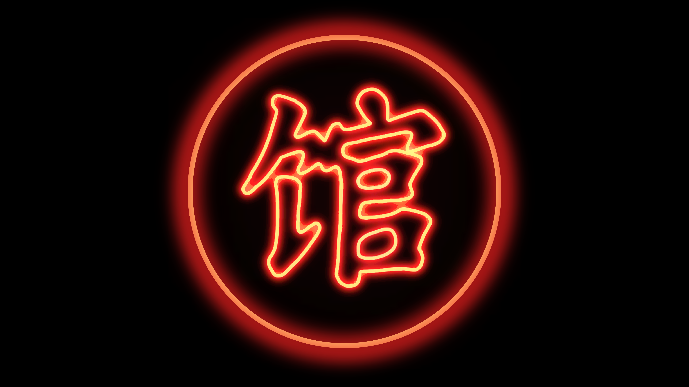

Branding • Logo Design
Branding • Logo Design
GUAN is a local Asian American DJ group formed by SANDEL and BOYU. GUAN is based in New York City. Their mission is to bring diversity into the dance music scene.
The artist group requested a logo for their social media accounts and content. The logo concept resonates with the nightlife in Asian countries.
The client provided reference photos and colors:
I created various iterations and discussed which versions resonated the most. The artist decided on a version with an orange and red tint.

-01.png)
-01.png)

For the final version, I used Procreate to enhance the neon light glow effect as requested by the client.
